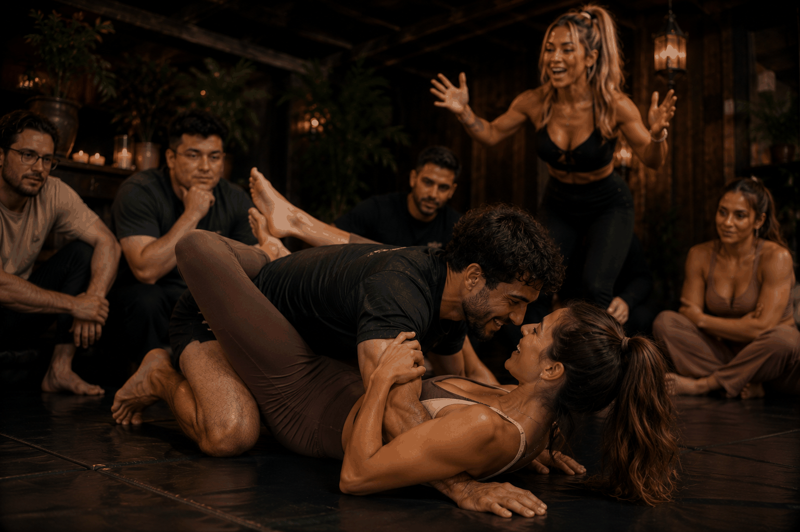

Lad os starte med virkeligheden.
I den kriminelle underverden flyder der kontanter. En del af dem flyder i retning af sexarbejdere, der inviteres til fester, afterparties og private arrangementer. Det er ikke nyt.
Det nye er, at oplevelsen sjældent er god for nogen.
Sexarbejderne føler sig utrygge. Mændene opfører sig som mænd, der aldrig har fået at vide, at en anden persons krop ikke er en buffet. Og stemningen er omtrent lige så intim som en tankstation kl. 3 om natten.
Katja så et hul i markedet.
Katja er ikke sexarbejder. Katja er facilitator.
Hendes badge siger "ORGIE INSTRUKTØR", og det er lige præcis det, hun er.
Hun skaber rammerne. Hun sætter reglerne. Og hun sørger for, at alle i rummet ved, hvad de har sagt ja til, før noget som helst sker.
Hendes tilgang er enkel:
Gæstelisten er kurateret. Katja inviterer kun mænd, hun stoler på. Mænd der besidder en lille mængde emotionel intelligens. Mænd der kan håndtere et "nej" uden at få det til at handle om dem selv.
Bonus, hvis de er Halal Boys: typen der sagtens kan poppe en pagne uden at drikke den. En person der kan være i et intenst miljø uden at miste hovedet.
Samtykke-workshop først.
Før nogen tager tøj af, sidder alle i en cirkel.
Katja gennemgår de grundlæggende regler: Samtykke skal være frivilligt. Det skal være entusiastisk. Det skal være løbende. Og det skal være respektfuldt.
Lyskryds-systemet.
Grøn betyder ja.
Gul betyder vent og re-connect.
Rød betyder STOP.
Ingen diskussion. Ingen forhandling.
Rød er rød. Altid.
Play Fighting.
Før den seksuelle energi fylder rummet, faciliterer Katja en legende workshop, hvor deltagerne mærker hinanden fysisk, men ikke seksuelt.
Kontakt og nærvær. Grænser og respekt. Forbindelse.

Det smarte ved modellen er, at den virker for alle parter.
Sexarbejderne føler sig tryggere. Og tryggere sexarbejdere tillader sig selv at være i nydelse.
Mændene lærer noget, de aldrig har lært: at tale om behov, mærke grænser, og at et "nej" ikke er en afvisning af dem som person.
Og den viden bliver i kroppen.
Katja kalder det personlig udvikling forklædt som en festlig aften.
Bande Bladet kalder det cirkulær økonomi.
Her bliver det vigtigt at være præcis.
I Danmark blev det i 1999 lovligt at sælge seksuelle ydelser.
Sexarbejde er altså legalt som selvstændig virksomhed.
Men samtidig gør rufferiparagraffen (straffelovens § 233) det ulovligt at tjene penge på andres sexarbejde.
Det gælder blandt andet, hvis man driver bordel, organiserer prostitution eller faciliterer det økonomisk.
For sexarbejdere må gerne arbejde.
De må bare helst gøre det alene.
Hun beskriver ikke sine arrangementer som sexarbejde.
Hun beskriver dem som social infrastruktur.
Og mærkeligt nok virker det.
Hun er i øjeblikket ved at skrive bogen: